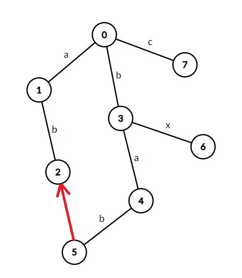

AC 自动机
本文比较随意地讲解了一下 AC 自动机极其 fail 树的构建以及应用；可能不太严谨，但追求通俗易懂。
建议自学一下 trie 树，然后看一下我的 KMP 博客，也许就能毫不费力地看懂这篇 AC 自动机的学习笔记。
写在前面¶
为了更方便地描述字符串相关内容，我们做出以下规定：
- 字符串通常用 \(S, T\) 等表示，\(c\) 通常表示一个字符，\(\Sigma\) 表示字符集；
- 字符串长度用 \(\left|S\right|\) 表示；
- 字符集大小用 \(\left|\Sigma\right|\) 表示；
- \(S[l..r]\) 表示 \(S[l], S[l + 1], \ldots, S[r - 1], S[r]\)；
- 空串用 \(\epsilon\) 表示；
- 由 \(S_1, S_2, \cdots, S_n\) 构成的 trie 树，用 \(\textrm{trie}(S_1, S_2, \cdots, S_n)\) 表示；
- 字典树中从根沿着边走到 \(i\) 节点所形成的的字符串，用 \(\textrm{str}(i)\) 表示。
特殊地，本文的字符串下标 从 \(1\) 开始，trie 树的 根节点编号为 \(0\)。
一些字符串有关术语的例子
对于 \(S = \mathtt{ABCBAD}\) 而言：
- \(\left|S\right| = 6\)；
- \(\left|\Sigma\right| = 4\)；
- \(S[2..4] = \mathtt{BCBA}\)；
定义¶
笼统地讲，AC 自动机实际上是一个 trie 图 加上很多的 fail 指针形成的结构。
AC 自动机中的 fail 指针就如同 KMP 算法的 \(\pi\) 数组；
但不同的是 fail 指针能在多个模式串上迭代，而 \(\pi\) 数组只能在单一的模式串上迭代。
注意到我的描述为「是一个 trie 图」，因为 AC 自动机实际上把所有 非法状态 都连向了沿着 fail 指针走后的 合法状态；
而这样就形成了一个图而不是单纯的一棵树。
也许你并不能理解上一句话，不过不要紧，我们先从「基于 trie 树结构的 AC 自动机」的结构开始说起。
对于一个模式串为 \(S_1, S_2, \cdots, S_n\) 基于 trie 树结构的 AC 自动机而言，有：
- \(\textrm{ch}[u, c]\) 数组。
指向的是 \(u\) 节点，往后拓展一个字符 \(c\) 之后到达的节点。
- \(\text{fail}[u]\) 数组。
\(\textrm{fail}[u]\) 自 \(u\) 开始，指向 \(\textrm{trie}(S_1, S_2, \cdots, S_n)\) 中的最长的，前缀与 \(\textrm{str}(u)\) 的真后缀相等的节点。
如下图所示，\(5\) 号节点的 fail 指针指向的是 \(2\) 号节点，因为 \(\textrm{str}(5) = \mathtt{bab}, \textrm{str}(2) = \mathtt{ab}\)；
\(\mathtt{ab}\) 是这棵 trie 树中最长的满足前缀（\(\mathtt{ab}\)）与 \(\textrm{str}(5)\) 的某一真后缀（\(\textrm{str}(5)[2..3] = \mathtt{ab}\)）相等的节点。

算法流程¶
一个 AC 自动机的建立以及使用包括三个流程：「trie 树的构建」、「fail 指针的连接」和「对一个文本串进行匹配」。
trie 树的构建¶
刚才我们在定义中提到了「基于 trie 树的 AC 自动机」的结构，
而「trie 树转化为 trie 图」的过程是在连接 fail 指针的时候进行的。
给定一些模式串 \(S_1, S_2, \cdots, S_n\)，让你构建出 \(\textrm{trie}(S_1, S_2, \cdots, S_n)\)。
警告
若不会构建 trie 树，建议先学习 trie 树之后再来看这篇文章。
下面是 AC 自动机的「插入」部分的代码。
Insert
1 2 3 4 5 6 7 8 9 | |
fail 指针的连接¶
首先，我们把 \(0\) 和 \(0\) 的所有儿子节点的 fail 指针都设为 \(0\)（即根节点）。
然后我们通过 BFS 来实现每个节点的 fail 指针的连接以及将 trie 树转化为 trie 图的过程。
为什么通过 BFS 呢？
注意到，\(\textrm{fail}[u]\) 在 trie 树上的深度一定是小于等于 \(u\) 在 trie 树上的深度的，因此我们可以使用 BFS 来构建。
怎么构建呢？trie 树为啥变成 trie 图了呢？
考虑 fail 指针的意义，表示最长的前缀等于当前节点的真后缀的节点，我们尝试着往后拓展一个字符 \(c\)；
如果存在着 \(\textrm{ch}[\textrm{fail}[u], c]\) ，那么很显然 \(\textrm{fail}[\textrm{ch}[u, c]] \gets \textrm{ch}[\textrm{fail}[u], c]\)，然后我们将 \(\textrm{ch}[u, c]\) 放进队列里等候着 BFS；
如果不存在呢？那么这个节点对应着的其实是一个 非法状态，我们应该沿着 fail 指针跳至某一个合法状态。
为了简便，我们 直接将这些非法状态等价到 fail 指针指向的节点！
不难发现，这样 trie 树就变成了一棵 trie 图（每个节点除了指向父亲，还有指向深度小于等于自身的节点的出边）。
下面给出的是 AC 自动机的构建部分的代码。
Build
1 2 3 4 5 6 7 8 9 10 11 12 13 14 15 16 17 | |
对一个文本串进行匹配¶
求所有模式串在文本串中分别出现的次数。
从左至右检查文本串的每个字符然后直接暴力跳 \(\textrm{ch}[u, c]\) 即可，因为我们已经建出了 trie 图！
不用再考虑 fail 指针要怎么跳的问题了。
如同 ouuan 在 他的博客 里说到的，普通的「暴力跳 fail 指针」的 AC 自动机求模式串出现次数其实是 错误 的；
正确的做法是建出 fail 树之后 dfs 求出每棵子树的大小。
下面给出的是 AC 自动机建立 fail 树以及查询操作的代码。
Query
1 2 3 4 5 6 7 8 9 10 11 12 13 14 15 16 17 18 19 20 21 | |
例题¶
暂时还咕着在。
写在最后¶
简单的一批，我会了。